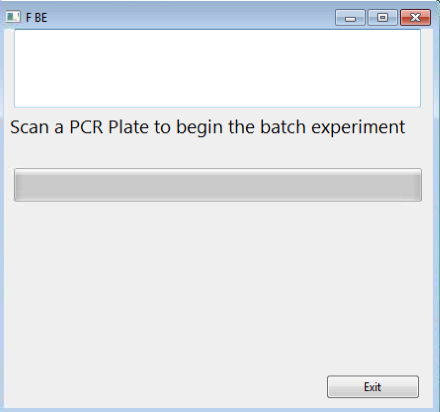
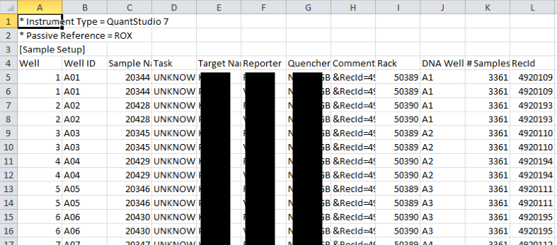
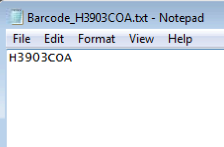

Generate a Batch Experiment
Once the plates have been assigned, input files can be generated for the qPCR machine
Once the quality has been tracked and the DNA plates assigned to a PCR plate, the PCR reaction can begin. We used an Applied Biosystems qPCR machine that runs with Quant Studio software. This software allows for large quantities of PCR reactions to occur sequentially so long as each plate has the proper input files linked to its barcode. The LIMS generates these files by scanning the Batch Experiment function as shown here.

There are two primary files required to run the PCR reaction. The first is a plate layout that dicates which chemicals are required for the reaction, which samples are in each well fo the plate, and what are the target and reference assays for the reaction. Depending on the assays, the chemicals and process may be different, so this must be defined in the setup files. The second file produced is simply the PCR plates barcode so it can be attached to the experiment.

